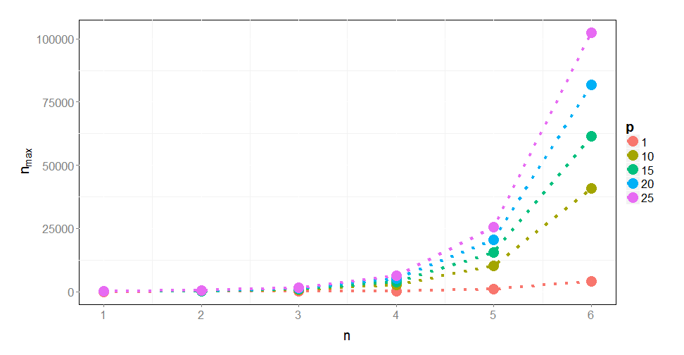

- n-gram definition.
- Iterative n-gram building.
- Results.
- Conclusions and perspectives.
Michal Burdukiewicz, Piotr Sobczyk
n-grams (k-tuples) are vectors of n characters derived from input sequence(s). They may form continuous sub-sequences or be discontinuous.
Important n-gram parameter is its position. Instead of just counting n-grams, one may want to count how many n-grams occur at a given position in multiple (e.g. related) sequences.
| P1 | P2 | P3 | P4 | P5 | P6 | |
|---|---|---|---|---|---|---|
| S1 | G | A | C | T | A | A |
| S2 | G | C | G | C | A | A |
| S3 | C | C | A | C | G | G |
| A | C | G | T | |
|---|---|---|---|---|
| S1 | 1 | 2 | 1 | 2 |
| S2 | 2 | 2 | 2 | 0 |
| S3 | 1 | 0 | 2 | 3 |
| P1 | P2 | P3 | P4 | P5 | P6 | |
|---|---|---|---|---|---|---|
| S1 | G | A | C | T | A | A |
| S2 | G | C | G | C | A | A |
| S3 | C | C | A | C | G | G |
| AA | CA | GA | TA | AC | CC | GC | TC | AG | CG | GG | TG | AT | CT | GT | TT | |
|---|---|---|---|---|---|---|---|---|---|---|---|---|---|---|---|---|
| S1 | 0 | 0 | 0 | 1 | 0 | 0 | 1 | 0 | 1 | 0 | 0 | 0 | 0 | 1 | 0 | 1 |
| S2 | 0 | 1 | 1 | 0 | 1 | 0 | 0 | 0 | 1 | 1 | 0 | 0 | 0 | 0 | 0 | 0 |
| S3 | 0 | 0 | 1 | 0 | 0 | 0 | 0 | 0 | 0 | 0 | 0 | 1 | 1 | 0 | 1 | 1 |
| P1 | P2 | P3 | P4 | P5 | P6 | |
|---|---|---|---|---|---|---|
| S1 | G | A | C | T | A | A |
| S2 | G | C | G | C | A | A |
| S3 | C | C | A | C | G | G |
| X1_A.A_0 | X2_A.A_0 | X3_A.A_0 | X4_A.A_0 | X5_A.A_0 | X1_C.A_0 | X2_C.A_0 | X3_C.A_0 | |
|---|---|---|---|---|---|---|---|---|
| S1 | 0 | 0 | 0 | 0 | 1 | 0 | 0 | 0 |
| S2 | 0 | 0 | 0 | 0 | 1 | 0 | 0 | 0 |
| S3 | 0 | 0 | 0 | 0 | 0 | 0 | 1 | 0 |
\[n_{\text{max}} = p \times m^n\]
\(n_{\text{max}}\): total number of n-grams.
\(p\): number of possible positions.
\(m\): number of letters in the alphabet.
\[n_{\text{max}} = p \times m^n\]

<!--html_preserve-->
<!--/html_preserve-->